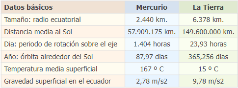

MERCURIO
Mercurio es un planeta conocido por ser el más cercano al sol y más pequeño de nuestro sistema solar. Este planeta ha estado presente en la historia humana desde hace milenios. Su descubrimiento exacto no está registrado. Sin embargo, se tienen pruebas de que las civilizaciones más antiguas ya observaban a este veloz planeta de forma rudimentaria.
Esto se debe a que no se necesitan instrumentos avanzados para verlo desde la Tierra en algunas épocas, y esto llevó a que su existencia fuera fácilmente notable.
Varias misiones espaciales se han llevado a cabo con el fin de aprender más acerca del planeta más cercano al Sol. Estas nos han permitido aprender acerca del comportamiento de los planetas más próximos al Sol y sus características. Por lo que el estudio de ese planeta podría significar un avance significativo en los conocimientos astronómicos humanos.
Índice
El origen de Mercurio
La teoría más aceptada por la ciencia indica que Mercurio se comenzó a formar junto a la mayoría de los cuerpos astrales del sistema solar. Esto es, hace 4500 millones de años. Al igual que todos los astros dentro y fuera del cinturón de asteroides, sus inicios fueron en el disco protoplanetario que se formó luego del nacimiento del Sol.
Después de que gran parte de la masa restante del colapso gravitacional se reuniera en el centro del sistema para conformar el Sol, los restos fueron aplanados. Dicho aplanamiento fue conformado por la fuerza gravitacional naciente del mismo Sol, dando lugar al disco protoplanetario.
Transcurridos millones de años, el polvo y los restos fueron tomando órbita alrededor del Sol. Gracias a la formación de dicha órbita, otros cuerpos menores y escombros restantes fueron atrapados en las órbitas de cuerpos mayores. Este acto dio lugar a la formación de planetas, como lo es Mercurio.
El origen de su nombre
El planeta Mercurio ha sido observado desde hace miles de años, siendo probablemente descubierto por la antigua civilización Sumeria. Es por esto que, la religión tenía una conexión directa con la observación espacial de ese entonces, es decir, la astrología.
Por estas razones, los planetas que hoy conocemos han sido nombrados de diferentes formas a lo largo de los milenios. Sin embargo, fueron los Griegos quienes nombraron por último a este planeta en representación de uno de sus dioses; Hermes era el dios del comercio, un mensajero veloz y un ladrón.
La razón para bautizar a este planeta con el nombre este dios se debía a su confuso pero veloz patrón de movimiento. Tiempo después, con la llegada del Imperio Romano, el nombre de este planeta (basado en el dios Hermes) fue traducido al romano como “Mercurius”. Posteriormente y en la actualidad está traducido como “Mercurio”.
Características físicas de Mercurio
Mercurio forma parte de los denominados planetas interiores o terrestres, y no tiene satélites. Es un planeta muy denso, el segundo con mayor densidad del Sistema Solar, después de la Tierra. En su composición química hay un 70% de elementos metálicos; el resto son silicatos.
El relieve de Mercurio es muy parecido al de nuestro satélite, la Luna. El paisaje está lleno de cráteres y grietas, en medio de muchísimas marcas ocasionadas por los impactos de los meteoritos. Los cráteres más viejos están muy erosionados, probablemente a causa de los cambios de temperatura tan bruscos. El planeta también ha tenido actividad volcánica; la lava formó cuencas, depresiones y planicies parecidas a los mares de nuestra Luna.
La interacción con el viento solar revela que Mercurio está envuelto por una capa magnética, la magnetosfera. La presencia de este campo magnético indica que tiene un núcleo metálico, parcialmente líquido, que ocupa casi la mitad del volumen del planeta.
El tiempo en Mercurio
Mercurio/, el planeta, da la vuelta al Sol en menos de tres meses. Su órbita es la más excéntrica entre los planetas menores. En cambio, gira lentamente sobre su eje, una vez cada 58 días y medio. Antes lo hacía más rápido, pero se va frenando a causa de la influencia gravitatoria del Sol.
Un día en Mercurio no es como un día aquí en la Tierra. Para nosotros, el Sol sale y se pone todos los días. Debido a que Mercurio gira lentamente y tiene un año corto, le lleva mucho tiempo al Sol salir y ponerse allí. Mercurio solo tiene un amanecer cada 180 días de la Tierra.
Otra rareza mercuriana que sorprende es el fenómeno del doble amanecer. En algunos lugares y momentos, el Sol sale, se para, vuelve a esconderse y sale otra vez. En otros puntos de la superficie no se esconde después de salir, pero sí se detiene. Esta "parada y marcha atrás" del Sol ocurre desde los cuatro días anteriores al perihelio hasta los cuatro posteriores, cuando las velocidades angulares orbital y rotatoria de Mercurio se igualan.
Mercurio y el planeta Tierra
La siguiente tabla muestra algunos datos básicos del planeta Mercurio comparados con los de la Tierra:

Galería de imágenes
Referencias
- Mercurio, un planeta lleno de sorpresas.
- La historia de Mercurio, el hermano menor de la Tierra
- El planeta Mercurio
- Todo sobre Mercurio
| ◄ Anterior | Siguiente ► |
| Inicio | Venus |